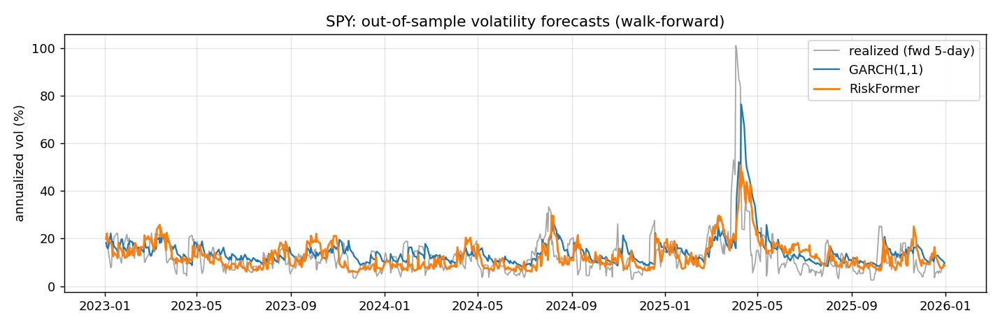

AI · Finance
RiskFormer
Can a computer tell how bumpy the stock market will be tomorrow? RiskFormer is an AI model that tries. It doesn't guess whether prices go up or down (nobody can do that reliably). It predicts how much they're likely to swing, which is what banks and investors use to manage risk.
- Beat the standard method that finance textbooks teach, on three years of data it had never seen
- Honest about uncertainty: when it said “90% sure the price lands in this range,” it did 91% of the time
- Built from scratch, including the AI's core math
How it's built
A causal Transformer written from scratch in PyTorch that forecasts the distribution of next-day returns for SPY, QQQ and IWM: mean, volatility and 5/50/95% quantiles. Out of sample (2023–2025) it scores QLIKE 0.436 vs 0.446 for GARCH(1,1), with walk-forward validation, an embargo against look-ahead leakage and 98 tests.